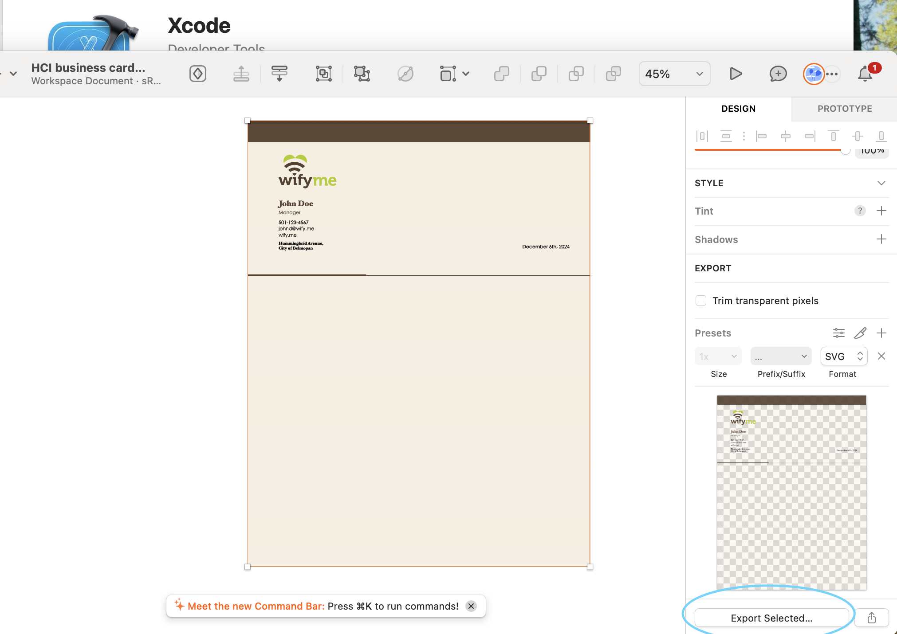

Exporting Files
Pain Point: Finding the export option was unexpectedly difficult. I looked for it in the usual File menu but couldn’t locate it there. It was tucked away in the bottom-right corner of the interface, and I had to scroll down to see it.
Resolution: After unsuccessfully searching for a while, I Googled how to export files in Sketch and finally located it.
Screenshot: (Attach a screenshot of the export menu for clarity.)